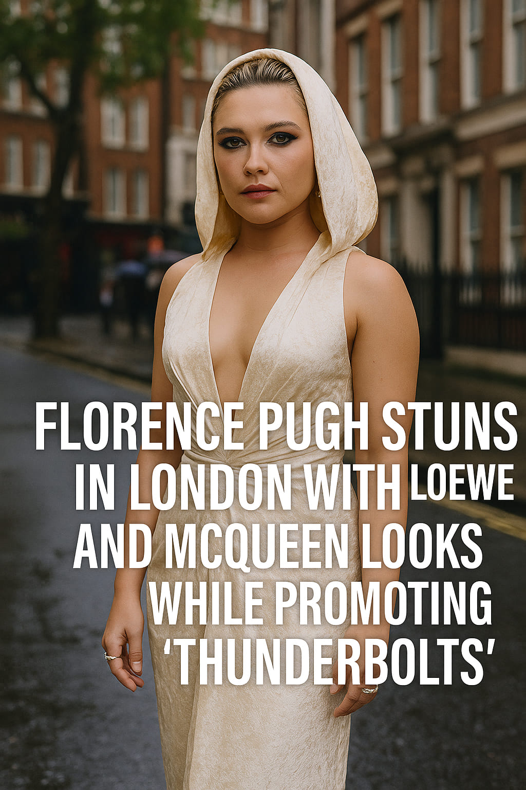

Florence Pugh Stuns in London with Loewe and McQueen Looks While Promoting “Thunderbolts”
British actress Florence Pugh turned heads in London during the promotional tour of Marvel’s upcoming film Thunderbolts, wearing a curated series of bold, high-fashion ensembles that blurred the line between superhero chic and couture elegance.
Red Carpet Heroism
At the Leicester Square premiere, Pugh wore a striking cream gown by Nina Ricci, featuring a dramatic hood and clean silhouette. Earlier appearances included a sculptural mini by Stella McCartney at CinemaCon and a shimmering green number from Elie Saab — each outfit reinforcing her status as a modern style icon.
Mixing Drama and Precision
Her fashion run didn’t stop there. In London, she rocked a structural Francesco Murano suit before donning a mint-green Alexander McQueen dress in L.A. Her talk show wardrobe included a glittering Altuzarra piece and a vintage archival Mugler suit, nodding to the cinematic roots of her new Marvel role.
Fashion Meets Marvel
Pugh’s style choices during the Thunderbolts rollout speak volumes — they’re confident, curated, and a seamless extension of her cinematic persona. It’s a campaign that proves fashion can be just as compelling as the film itself.
Words by Style Atlas